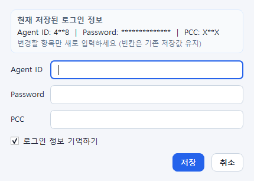
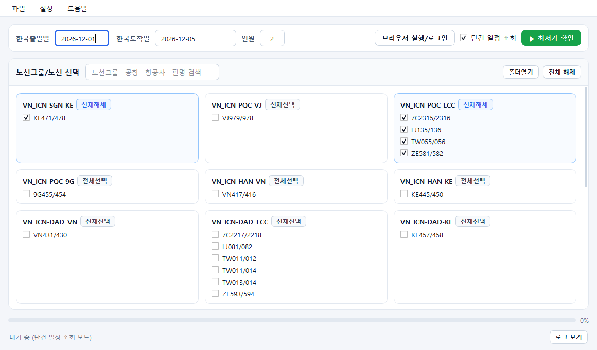
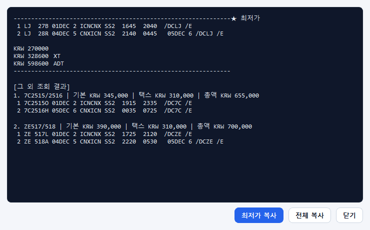
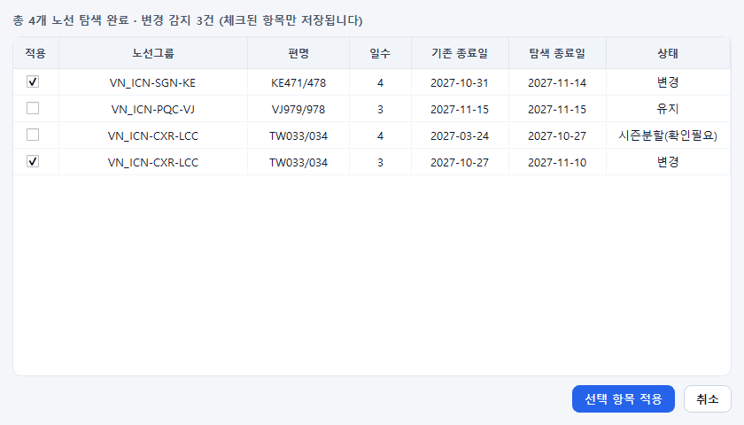

항공운임 조회 (SABRE VER.) 사용 안내
Sabre Red Web 실시간 가용·운임을 자동 조회해 엑셀로 정리하고, 단건 견적 최저가까지 한 화면에서 확인하는 데스크톱 프로그램입니다.
조회 전용 안전 모드 (예약·발권 명령 차단)
내부 API 고속 조회 · 그룹 최저가 통합 엑셀
단건 일정 최저가 즉시 견적
STEP 1
설치 · 노선 불러오기
셋업 설치 후 sabre-routes.example.csv를 불러오거나 노선을 등록합니다.
STEP 2
Sabre 로그인
브라우저 실행/로그인 클릭 후 계정 입력 및 휴대폰 Okta 푸시를 승인합니다.
STEP 3
기간 / 단건 조회
일괄 엑셀 수집 또는 단건 일정 조회로 최저가 운임을 확인합니다.
STEP 4
엑셀 · 견적 복사
폴더열기로 엑셀을 열거나 단건 팝업에서 최저가 복사를 누릅니다.
1
설치 및 첫 실행
- 배포받은
SabreAutoLookup_Setup_v1.0.0.exe를 실행해 설치 시작을 누릅니다. (기본 경로:%LOCALAPPDATA%\SabreAutoLookup, 관리자 권한 불필요) - 바탕화면 또는 시작 메뉴의 항공운임 조회 (SABRE VER.) 아이콘을 실행합니다.
- 최초 설치 시 노선 DB(
sabre-routes.json)는 비어 있습니다. 상단 메뉴 설정 > 조회 노선 관리(Ctrl+R)를 열고 하단 CSV 불러오기를 눌러 설치 폴더에 함께 들어 있는sabre-routes.example.csv를 선택하면 샘플 노선 목록이 즉시 등록됩니다.
안전 원칙 (조회 전용): 이 프로그램은 Sabre에 예약 저장·발권 명령(
E, ER, ET, RF)을 절대 전송하지 않습니다. 모든 날짜 조회는 I(무시/초기화)로 시작해 WPNCB 운임 확인 후 마지막 I로 임시 여정을 완전히 정리합니다.
2
Sabre 로그인 및 작업창 연결
메인 화면 우측 상단의 브라우저 실행/로그인 버튼을 누르면 로그인 정보 입력 창이 열립니다.


- Agent ID · Password · PCC를 입력하고 로그인 정보 기억하기에 체크하면 2회차부터는 팝업 없이 바로 로그인됩니다.
- 설정 > 로그인 정보(Ctrl+L)에서 다시 열면 기존 저장값은
4**8,******처럼 일부 마스킹되어 표시되며, 변경할 항목만 입력해 저장할 수 있습니다. - 로그인을 진행하면 전용 Chrome(포트
9223)이 열리고 Sabre 로그인 화면에 계정 정보가 자동 입력됩니다. - 휴대폰으로 Okta Verify 푸시 알림이 도착하면 승인해 주세요. 승인하지 않아 만료되면 5분 간격으로 최대 5회 자동 재전송합니다.

I → IGD 정상 연결 상태 · 민감 코드 가림 처리)클릭하여 확대
자동 최소화 & 세션 복구: 로그인이 완료되면 전용 Chrome은 자동으로 최소화(백그라운드) 상태로 유지되므로 다른 업무를 그대로 보실 수 있습니다. 장시간 조회 중 세션이 만료되면 프로그램이 자동으로 재로그인을 시도한 뒤 중단된 날짜부터 이어서 수집합니다. (단, 전용 Chrome 창은 조회 중 닫지 마세요.)
3
기간 일괄 조회 (엑셀 자동 수집)
여러 노선그룹과 편명의 일자별 운임을 한 번에 수집해 개별 엑셀 및 그룹 최저가 통합 엑셀로 저장하는 기본 모드입니다.

화면 구성 및 사용 순서
- 시작일 / 종료일: 시작일 기본값은
오늘 + 3일입니다.20261201처럼 숫자 8자리만 입력하고 Tab을 누르거나 다른 곳을 클릭하면 자동으로2026-12-01로 변환됩니다. - 기간 빠른 설정: 종료일 옆 한달 · 분기 · 반기 · 일년 버튼을 누르면 시작일 기준으로 종료일이 자동 계산됩니다. 종료일을 비워 두면 각 노선에 등록된 조회종료일까지 수집합니다.
- 날짜 교집합 규칙: 노선별 조회시작일/종료일이 설정되어 있으면 메인 화면 기간과 겹치는 실제 유효 기간만 자동으로 조회합니다. (시작일 > 종료일이거나 둘 다 비어 있으면 실행 전 알림으로 안내)
- 노선 검색 & 선택: 검색창에 노선그룹·공항·항공사·편명을 입력하면 실시간 필터링되며, 기존 체크 상태는 유지됩니다. 카드 제목 옆 전체선택 / 전체해제 버튼 하나로 그룹을 일괄 토글할 수 있습니다.
- 조회 시작 / 정지: 파란색 ▶ 조회 시작을 누르면 수집이 시작되고 같은 버튼이 빨간색 ■ 정지로 전환됩니다. 하단 진행바는 선택한 전체 노선·날짜 합계 기준의 누적 진행률을 표시합니다.
엑셀 저장 결과
- 저장 경로 변경: 상단 메뉴 설정 > 엑셀 저장 경로(Ctrl+E)에서 원하는 폴더를 지정할 수 있으며, 카드 우측 폴더열기 버튼으로 즉시 열 수 있습니다.
- 개별 노선 엑셀: 날짜(A열), 운임(B열: 정수 금액 /
예약마감/조회불가) 형식으로 저장되며,조회불가날짜는 1회 자동 재조회합니다. - 그룹 최저가 통합 엑셀: 같은 노선그룹 내 여러 항공사를 함께 조회하면 날짜별 항공사 운임과 최저가·최저가 항공사 수식이 담긴 통합 시트가 자동 생성됩니다.
4
단건 일정 조회 (최저가 즉시 견적)
고객 단건 견적처럼 특정 출발일·귀국일에 대해 선택한 노선그룹 안의 여러 항공사 중 어디가 가장 저렴한지 즉시 비교할 때 사용하는 기능입니다.

- 상단 단건 일정 조회 체크박스를 선택합니다.
- 입력란이 한국출발일 · 한국도착일 · 인원(기본 1명)으로 바뀌고, 노선 카드의
+N일수 표시는 헷갈리지 않도록 자동으로 숨겨집니다. - 비교할 노선그룹(예:
VN_ICN-PQC-LCC전체)을 체크한 뒤 초록색 ▶ 최저가 확인 버튼을 누릅니다. - 야간 귀국편(
+1일새벽 한국 도착)은 프로그램이 현지 출발일을 자동으로 하루 당겨(-1일) 정확히 한국도착일에 맞춰 조회합니다.

- 최저가 복사: 상단
★ 최저가블록만 클립보드에 복사해 메신저·견적서에 바로 붙여넣을 수 있습니다. - 전체 복사: 최저가와
[그 외 조회 결과](각 항공사의 일정·금액 또는 조회불가 사유)를 한꺼번에 복사합니다.
5
조회 노선 관리 (Ctrl+R)
상단 메뉴 설정 > 조회 노선 관리(Ctrl+R)에서 조회 대상 노선·편명·항공일수·인원·클래스·운임기준(FARE KRW / TOTAL KRW)을 엑셀처럼 편집할 수 있습니다.

| 조작 방법 | 동작 내용 |
|---|---|
| 행 더블클릭 또는 F2 | 해당 행 전체 인라인 수정 활성화 (Enter 저장 / Esc 취소). 운임만과 사용은 드롭박스로 선택합니다. |
| 입력 칸 내 ↑ / ↓ | 텍스트 커서를 칸 맨 앞(↑) / 맨 끝(↓)으로 즉시 이동합니다. |
| 빈 공간 우클릭 | 노선 추가(기본값: 인원 4, 클래스 Y, FARE KRW, 사용) 또는 붙여넣기로 노선 추가 |
| 기존 행 우클릭 | 노선 복사(복사된 행으로 즉시 포커스 이동) · 노선 삭제 · 최종 조회일 업데이트 |
| Ctrl+C / Ctrl+V | 셀 단위 복사·붙여넣기 및 엑셀 다중 셀·다중 행 붙여넣기 지원. 빈 공간에 4행을 붙여넣으면 4개 노선이 한 번에 신규 추가됩니다. |
| CSV 내보내기 / 불러오기 | 노선 목록 전체를 엑셀 호환 CSV로 백업하거나 복원합니다. (설치 폴더의 sabre-routes.example.csv 참고) |
미완성 행 & 빈 조회시작일 동작: 일부 필드만 채워 임시 저장한 노선 행은 표에 보관되지만, 필수 필드가 모두 채워지기 전까지는 메인 자동조회 화면에 노출되지 않습니다. 또한 노선의 조회시작일이 비어 있으면 표에는 메인 화면의 현재 시작일이 자동으로 표시됩니다.
6
최종 조회일 자동 업데이트
항공사 스케줄이 연장될 때마다 노선별 조회종료일을 일일이 찾을 필요 없이, Sabre에 열려 있는 마지막 운항일을 이진 탐색(약 360일 범위)으로 자동 찾아 반영합니다.

- 전체 탐색: 조회 노선 관리 하단의 최종 조회일 업데이트 버튼을 누릅니다. (탐색 중에는 ■ 탐색 정지로 중단 가능)
- 선택 행만 탐색: 특정 노선 행에서 우클릭 > 최종 조회일 업데이트를 누르면 해당 행만 빠르게 갱신합니다.
- 시즌분할(확인필요) 보호: 같은 편명이 동계/하계 등으로 2줄 이상 나뉘어 등록된 경우, 종료일이 가장 늦은 마지막 시즌 행만 기본 체크되고 앞 시즌 행은 실수로 덮어쓰지 않도록
시즌분할(확인필요)표시와 함께 체크가 해제됩니다.
7
실행 로그 · 자동 업데이트

- 실행 로그: 평소에는 메인 화면 하단 상태줄에 최신 1줄만 깔끔하게 표시되며, 상세 진행 기록·오류 원인을 보고 싶을 때 우측 하단 로그 보기를 눌러 확인합니다.
- 자동 업데이트: 앱을 실행하면 백그라운드에서 GitHub 릴리즈 최신 버전을 자동 확인합니다. 새 버전이 있으면 안내 창이 뜨고, 승인 시 설치 파일 다운로드·SHA256 무결성 검증·자동 교체 및 재실행까지 한 번에 완료됩니다.
- 수동 확인: 상단 메뉴 도움말 > 업데이트 확인으로 언제든 최신 버전을 확인할 수 있습니다. 업데이트 시 기존
sabre-config.json(로그인/경로)과sabre-routes.json(노선 목록)은 그대로 보존됩니다.
8
단축키 일람 및 자주 묻는 질문
| 단축키 | 적용 창 | 기능 |
|---|---|---|
| Alt+Enter | 메인 · 노선 관리 · 팝업 | 창 최대화 / 원래 크기 전환 |
| Ctrl+Q | 메인 · 노선 관리 | 창 닫기 / 프로그램 끝내기 |
| Ctrl+L | 메인 화면 | 설정 > 로그인 정보 열기 |
| Ctrl+E | 메인 화면 | 설정 > 엑셀 저장 경로 열기 |
| Ctrl+R | 메인 화면 | 설정 > 조회 노선 관리 열기 |
| F2 / Enter / Esc | 조회 노선 관리 | 인라인 편집 시작 / 저장 / 취소 |
| Ctrl+C / Ctrl+V | 조회 노선 관리 | 셀 복사 / 다중 셀·다중 행 붙여넣기 |
| ↑ / ↓ | 조회 노선 관리(편집 중) | 입력 칸 맨 앞 / 맨 끝 커서 이동 |
자주 묻는 질문 (FAQ)
- Q. 설치 후 메인 화면에 노선이 하나도 안 보여요.
A. 신규 설치 시 노선 DB는 비어 있습니다. Ctrl+R로 조회 노선 관리를 열어 하단 CSV 불러오기에서 설치 폴더의sabre-routes.example.csv를 불러오시거나 빈 공간 우클릭으로 직접 노선을 추가하세요. - Q. TOPAS 항공자동조회와 동시에 실행해도 되나요?
A. 네. TOPAS는 Chrome 포트9222, Sabre는 포트9223으로 완전히 분리되어 있어 서로 간섭하지 않습니다. 단, 동일 Sabre 계정으로 본 프로그램을 2개 동시에 실행하지는 마세요. - Q. 조회 중 세션이 만료되었다는 로그가 떠요.
A. 프로그램이 자동으로 Sabre 재로그인을 시도합니다. 휴대폰에 Okta 푸시가 오면 승인해 주시면 끊긴 날짜부터 이어서 수집합니다.